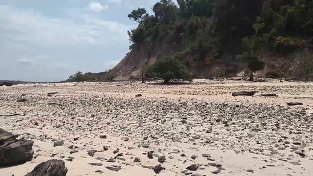

00:00:08.041
Praia com cascalho e pedras na base de uma encosta alta e arborizada.
Ponta do Cuatá, rio Tapajós, Santarém (PA) · confirmado
A abertura retoma a praia visitada no episódio anterior e a situa perto de Ponta de Pedras.
Transcrição · 00:00:00 | 00:00:08
Turismo Aqui — quadro de vídeo publicado no YouTube
Referência 1